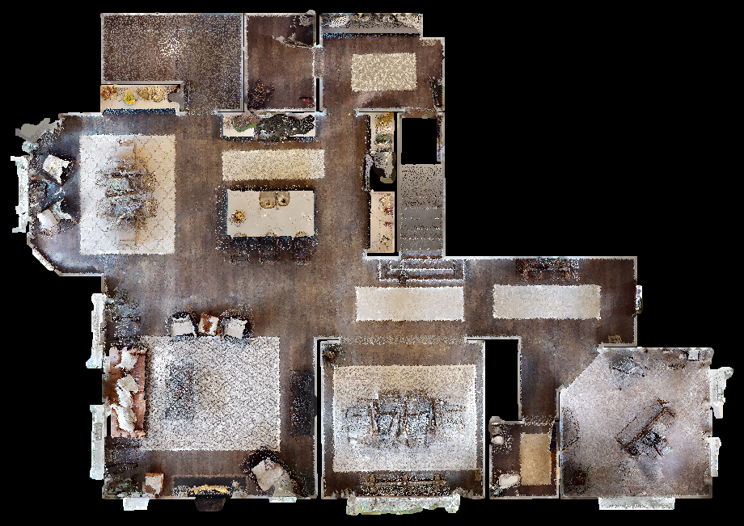

SIGNAL RE-SYNC
HAUNTED OPS
흉가 드론 관제
지정 구역 자율 순찰 · 드론 관제
{{introStatus}}

HAUNTED OPS
흉가 드론 관제
지정 구역 자율 순찰 · 드론 관제
드론 연결됨
SLAM 정상
생존 신호: 불안정
{{runCount}}
누적 순찰 수
{{roomCount}}
순찰 가능 구역
최근 순찰
{{recent1}}
{{recent2}}
새로운 순찰 작전 시작
순찰 기록
SCENE 00809_Qpor2mEya8F · 3 FLOORS · 22 ROOMS · 점군 596,356
← 로비로
← 관제로
미션 브리핑
STEP 2 / 3 — ANALYSIS
해석 신뢰도 96.4%
입력 명령
"{{briefCmd}}"
분석 결과
{{r.k}}
{{r.v}}
순찰 구역 · 방문 순서
{{t.order}}
{{t.name}}
{{t.sub}}
{{briefNote}}
작전 시작
작전 취소
{{m.label}}
{{m.tag}}
{{m.imgEl}}
{{mk.label}}
작전 준비 중
{{p.icon}}
{{p.txt}}
{{simVideoEl}}
SIM FEED · 미연결
시뮬레이터(Unity) 창을 이 화면에 띄우려면
아래 버튼을 눌러 그 창을 공유해 주세요
시뮬레이터 화면 연결
{{simShareErr}}
REC ●
CAM 01 · 3RD PERSON
← 브리핑
작전 진행 중
STEP 3 / 3 — LIVE OPERATION
"{{briefCmd}}"
{{patrolChip}}
−
⊟ {{cropTxt}}
+
화면 공유 해제
{{fsTxt}}
{{fsHint}}
순찰 완료
작전 중단
PATROL COMPLETE
순찰 완료
"{{briefCmd}}"
{{doneSummary}}
{{doneRoomsN}}
순찰한 구역 수
새 순찰 지정
순찰 기록
로비로
순찰 요약
{{r.k}}
{{r.v}}
순찰한 구역
{{t.order}}
{{t.name}}
{{t.sub}}
순찰 중단
PATROL ABORTED
{{overCause}}
순찰이 도중에 종료되어
보고서가 생성되지 않았습니다
.
남은 구역은 다시 지정해 순찰할 수 있습니다.
순찰 다시 지정
로비로
중단 시점 계획
{{r.k}}
{{r.v}}
지정했던 구역
{{t.order}}
{{t.name}}
{{t.sub}}
← 로비
미션 기록
OPERATION ARCHIVE
{{s.v}}
{{s.k}}
{{r.icon}}
"{{r.cmd}}"
{{r.scope}}
{{r.result}}
{{r.rooms}}
{{r.dist}}
{{r.time}}
{{r.date}}
{{r.route}}
{{r.log1}}
{{r.log2}}
{{r.log3}}
{{t.text}}